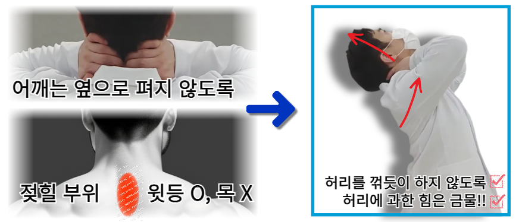

[바디올 스트레칭법 (척추정돈법)]

⚠️ 주의사항:
핵심은 허리나 목을 꺾듯이 하시면 안 된다는 점입니다. 어깨 또한 억지로 벌리려고 힘을 주지 않는 것이 좋습니다. 윗가슴이 위아래로 시원하게 펴지면서 동시에 윗등이 가볍게 젖혀지는 느낌에 집중하세요.
핵심은 허리나 목을 꺾듯이 하시면 안 된다는 점입니다. 어깨 또한 억지로 벌리려고 힘을 주지 않는 것이 좋습니다. 윗가슴이 위아래로 시원하게 펴지면서 동시에 윗등이 가볍게 젖혀지는 느낌에 집중하세요.
이 스트레칭은 단순한 근육 이완보다는 척추의 위치를 미세하게 조정하는 '기법'에 가깝습니다. 근육을 잡아당기는 느낌보다 뼈의 위치 이동에 초점을 맞춰야 효과가 극대화됩니다.
- 교정 중 필수: 치료 기간에는 하루 100번 이상 권장합니다.
- 평생 관리: 건강해진 이후에도 하루 10~20번 정도 습관화하면 큰 도움이 됩니다.
- 나누어서 자주: 한 번에 몰아서 하는 것보다 일상 중간중간 자주 해주시는 것이 핵심입니다.